CODING AGENTS AS PIXEL WORLD MODELS
traex/DeepSeek-V4.1-Flash · common50_0033
点击播放 · 原生 RGB 像素
逐轮保存的候选
回放视频、检查图与代码变化。
每份候选均可单独播放。实际图片检查记录在下方工具轨迹中。
候选 01播放与检查图
点击播放 · 原生 RGB 像素

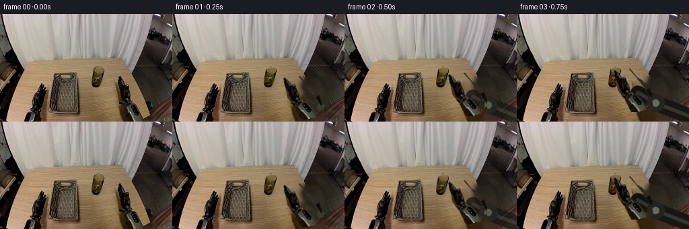
展开代码变化
--- 上一保存版本
+++ 本次保存版本
@@ -0,0 +1,255 @@
+from pathlib import Path
+
+import cv2
+import numpy as np
+from PIL import Image
+
+import artifact_io
+
+
+CASE_DIR = Path(__file__).resolve().parent
+W, H = 256, 160
+
+
+def smoothstep(value):
+ value = np.clip(value, 0.0, 1.0)
+ return value * value * (3.0 - 2.0 * value)
+
+
+def polygon_mask(shape, points, blur=0.0):
+ mask = np.zeros(shape[:2], np.uint8)
+ cv2.fillPoly(mask, [np.asarray(points, np.int32)], 255)
+ if blur:
+ mask = cv2.GaussianBlur(mask, (0, 0), blur)
+ return mask
+
+
+def alpha_composite(base, sprite, mask, x, y):
+ """Composite a same-sized RGB sprite and its alpha mask at integer offset."""
+ h, w = mask.shape
+ x0, y0 = max(0, x), max(0, y)
+ x1, y1 = min(W, x + w), min(H, y + h)
+ if x0 >= x1 or y0 >= y1:
+ return
+ sx0, sy0 = x0 - x, y0 - y
+ sx1, sy1 = sx0 + (x1 - x0), sy0 + (y1 - y0)
+ alpha = mask[sy0:sy1, sx0:sx1, None].astype(np.float32) / 255.0
+ region = base[y0:y1, x0:x1].astype(np.float32)
+ color = sprite[sy0:sy1, sx0:sx1].astype(np.float32)
+ base[y0:y1, x0:x1] = np.clip(
+ color * alpha + region * (1.0 - alpha) + 0.5, 0, 255
+ ).astype(np.uint8)
+
+
+def build_clean_plate(frame):
+ """Remove the cup and the independently moving right gripper."""
+ plate = frame.copy()
+
+ cup_mask = polygon_mask(
+ frame.shape,
+ [(136, 82), (145, 79), (155, 81), (158, 96), (155, 109),
+ (146, 111), (137, 108), (134, 94)],
+ blur=1.2,
+ )
+ cup_mask = cv2.dilate(cup_mask, np.ones((3, 3), np.uint8), iterations=1)
+ plate = cv2.inpaint(plate, cup_mask, 5, cv2.INPAINT_TELEA)
+
+ gripper_mask = polygon_mask(
+ frame.shape,
+ [(176, 91), (188, 90), (199, 94), (206, 105), (215, 114),
+ (224, 124), (225, 159), (187, 159), (185, 140), (178, 124),
+ (174, 109)],
+ )
+ gripper_mask = cv2.dilate(gripper_mask, np.ones((3, 3), np.uint8), iterations=1)
+ plate = cv2.inpaint(plate, gripper_mask, 7, cv2.INPAINT_TELEA)
+
+ # Restore the stable left gripper, basket, and table after inpainting.
+ stable = np.ones((H, W), bool)
+ stable[78:113, 132:161] = False
+ stable[88:160, 171:228] = False
+ plate[stable] = frame[stable]
+ return plate
+
+
+def extract_cup(frame):
+ x0, y0, x1, y1 = 132, 76, 162, 114
+ sprite = frame[y0:y1, x0:x1].copy()
+ local = polygon_mask(
+ sprite.shape,
+ [(5, 7), (13, 3), (23, 5), (27, 20), (24, 34),
+ (13, 37), (4, 33), (2, 20)],
+ blur=0.65,
+ )
+ return sprite, local, x0, y0
+
+
+def extract_right_gripper(frame):
+ x0, y0, x1, y1 = 170, 86, 228, 160
+ sprite = frame[y0:y1, x0:x1].copy()
+ hsv = cv2.cvtColor(sprite, cv2.COLOR_RGB2HSV)
+ value = hsv[:, :, 2]
+ chroma = sprite.max(axis=2).astype(np.int16) - sprite.min(axis=2).astype(np.int16)
+ green_led = (
+ (sprite[:, :, 1] > sprite[:, :, 0] + 10)
+ & (sprite[:, :, 1] > sprite[:, :, 2] + 7)
+ & (value > 40)
+ )
+ dark = (value < 100) | ((chroma < 27) & (value < 148))
+ local = (dark | green_led).astype(np.uint8) * 255
+
+ allowed = polygon_mask(
+ sprite.shape,
+ [(6, 5), (18, 3), (31, 10), (38, 24), (51, 38),
+ (55, 73), (18, 73), (13, 52), (6, 36)],
+ )
+ local = cv2.bitwise_and(local, allowed)
+ local = cv2.morphologyEx(local, cv2.MORPH_CLOSE, np.ones((3, 3), np.uint8))
+ local = cv2.GaussianBlur(local, (0, 0), 0.42)
+ return sprite, local, x0, y0
+
+
+def rotate_sprite(sprite, mask, angle):
+ rgba = np.dstack((sprite, mask))
+ rotated = np.asarray(
+ Image.fromarray(rgba, "RGBA").rotate(
+ angle, resample=Image.Resampling.BILINEAR, expand=False
+ )
+ )
+ return rotated[:, :, :3].copy(), rotated[:, :, 3].copy()
+
+
+def draw_forearm(frame, wrist, strength):
+ """A dark articulated arm extending from the right edge to the moving gripper."""
+ if strength <= 0:
+ return
+ overlay = frame.copy()
+ start = (255, 151)
+ elbow = (
+ int(round(start[0] * 0.36 + wrist[0] * 0.64)),
+ int(round(start[1] * 0.46 + wrist[1] * 0.54)),
+ )
+ end = wrist
+ width = 21
+ cv2.line(overlay, start, elbow, (22, 22, 20), width, cv2.LINE_AA)
+ cv2.line(overlay, elbow, end, (18, 18, 17), width - 2, cv2.LINE_AA)
+ cv2.line(overlay, start, elbow, (54, 54, 48), 4, cv2.LINE_AA)
+ cv2.line(overlay, elbow, end, (49, 49, 45), 4, cv2.LINE_AA)
+ cv2.circle(overlay, elbow, 13, (35, 35, 32), -1, cv2.LINE_AA)
+ cv2.circle(overlay, elbow, 5, (105, 105, 92), -1, cv2.LINE_AA)
+
+ arm_mask = np.zeros((H, W), np.uint8)
+ cv2.line(arm_mask, start, elbow, 255, width + 2, cv2.LINE_AA)
+ cv2.line(arm_mask, elbow, end, 255, width, cv2.LINE_AA)
+ cv2.circle(arm_mask, elbow, 15, 255, -1, cv2.LINE_AA)
+ arm_mask = (arm_mask.astype(np.float32) * strength).astype(np.uint8)
+ alpha_composite(frame, overlay, arm_mask, 0, 0)
+
+
+def cup_pose(frame_index):
+ """Cup center offset from its initial location."""
+ if frame_index <= 4:
+ return (0.0, 0.0)
+ if frame_index <= 6:
+ t = smoothstep((frame_index - 4) / 2.0)
+ return (-1.0 * t, -16.0 * t)
+ if frame_index <= 11:
+ t = smoothstep((frame_index - 6) / 5.0)
+ arc = 5.0 * np.sin(np.pi * t)
+ return (-1.0 - 45.0 * t, -16.0 - 7.0 * t - arc)
+ if frame_index <= 14:
+ t = smoothstep((frame_index - 11) / 3.0)
+ return (-46.0, -23.0 + 27.0 * t)
+ return (-46.0, 4.0)
+
+
+def gripper_offset(frame_index):
+ if frame_index == 0:
+ return (0.0, 0.0, 0.0)
+ if frame_index <= 4:
+ t = smoothstep(frame_index / 4.0)
+ return (-31.0 * t, -17.0 * t, 13.0 * t)
+ if frame_index <= 6:
+ t = smoothstep((frame_index - 4) / 2.0)
+ return (-31.0 - t, -17.0 - 16.0 * t, 13.0)
+ if frame_index <= 11:
+ t = smoothstep((frame_index - 6) / 5.0)
+ arc = 5.0 * np.sin(np.pi * t)
+ return (-32.0 - 45.0 * t, -33.0 - 7.0 * t - arc, 13.0)
+ if frame_index <= 14:
+ t = smoothstep((frame_index - 11) / 3.0)
+ return (-77.0, -40.0 + 27.0 * t, 13.0)
+ t = smoothstep((frame_index - 14) / 5.0)
+ return (-77.0 + 55.0 * t, -13.0 - 7.0 * t, 13.0 - 7.0 * t)
+
+
+def render():
+ source = np.asarray(Image.open(CASE_DIR / "first_frame.png").convert("RGB")).copy()
+ assert source.shape == (H, W, 3)
+ plate = build_clean_plate(source)
+ cup, cup_mask, cup_x, cup_y = extract_cup(source)
+ gripper, gripper_mask, grip_x, grip_y = extract_right_gripper(source)
+ rotated_gripper, rotated_mask = rotate_sprite(gripper, gripper_mask, 13.0)
+
+ # The basket's near side is always in front of anything dropped inside it.
+ basket_front = source[104:152, 76:122].copy()
+ basket_front_mask = polygon_mask(
+ basket_front.shape,
+ [(0, 2), (46, 2), (46, 47), (0, 47)],
+ blur=0.35,
+ )
+
+ frames = []
+ for index in range(20):
+ if index == 0:
+ frames.append(source.copy())
+ continue
+
+ frame = plate.copy()
+ cup_dx, cup_dy = cup_pose(index)
+ grip_dx, grip_dy, angle = gripper_offset(index)
+
+ # Draw the arm behind the gripper. Its wrist follows the rigid sprite.
+ wrist = (
+ int(round(205 + grip_dx)),
+ int(round(130 + grip_dy)),
+ )
+ draw_forearm(frame, wrist, smoothstep(index / 3.0))
+
+ # Cup first, then the gripping jaws; this puts the cup visually between them.
+ alpha_composite(frame, cup, cup_mask, int(round(cup_x + cup_dx)),
+ int(round(cup_y + cup_dy)))
+ alpha_composite(frame, rotated_gripper, rotated_mask,
+ int(round(grip_x + grip_dx)), int(round(grip_y + grip_dy)))
+
+ # While grasped, restore a small cup opening and rim above the jaws.
+ if 4 <= index <= 13:
+ cx = int(round(cup_x + cup_dx))
+ cy = int(round(cup_y + cup_dy))
+ rim = cup[3:13, 8:23]
+ rim_mask = cup_mask[3:13, 8:23]
+ alpha_composite(frame, rim, rim_mask, cx + 8, cy + 3)
+
+ # Insert the cup behind the basket's front wall during the final placement.
+ if index >= 11:
+ t = smoothstep((index - 11) / 3.0)
+ if t > 0:
+ front_mask = (basket_front_mask.astype(np.float32) * t).astype(np.uint8)
+ alpha_composite(frame, basket_front, front_mask, 76, 104)
+
+ # A subtle contact shadow makes the glass read as resting on the table.
+ if index < 5:
+ shadow = np.zeros((H, W), np.uint8)
+ sx = int(round(146 + cup_dx))
+ sy = int(round(110 + cup_dy))
+ cv2.ellipse(shadow, (sx, sy), (10, 2), 0, 0, 360, 80, -1, cv2.LINE_AA)
+ shadow = cv2.GaussianBlur(shadow, (0, 0), 1.4)
+ shade = (frame.astype(np.float32) * 0.82).astype(np.uint8)
+ alpha_composite(frame, shade, shadow, 0, 0)
+
+ frames.append(frame)
+
+ return np.stack(frames)
+
+
+if __name__ == "__main__":
+ artifact_io.save(render(), CASE_DIR)
候选 02播放与检查图
点击播放 · 原生 RGB 像素

展开代码变化
--- 上一保存版本
+++ 本次保存版本
@@ -129,18 +129,18 @@
int(round(start[1] * 0.46 + wrist[1] * 0.54)),
)
end = wrist
- width = 21
+ width = 17
cv2.line(overlay, start, elbow, (22, 22, 20), width, cv2.LINE_AA)
cv2.line(overlay, elbow, end, (18, 18, 17), width - 2, cv2.LINE_AA)
- cv2.line(overlay, start, elbow, (54, 54, 48), 4, cv2.LINE_AA)
- cv2.line(overlay, elbow, end, (49, 49, 45), 4, cv2.LINE_AA)
- cv2.circle(overlay, elbow, 13, (35, 35, 32), -1, cv2.LINE_AA)
- cv2.circle(overlay, elbow, 5, (105, 105, 92), -1, cv2.LINE_AA)
+ cv2.line(overlay, start, elbow, (57, 57, 50), 3, cv2.LINE_AA)
+ cv2.line(overlay, elbow, end, (52, 52, 47), 3, cv2.LINE_AA)
+ cv2.circle(overlay, elbow, 11, (35, 35, 32), -1, cv2.LINE_AA)
+ cv2.circle(overlay, elbow, 4, (105, 105, 92), -1, cv2.LINE_AA)
arm_mask = np.zeros((H, W), np.uint8)
cv2.line(arm_mask, start, elbow, 255, width + 2, cv2.LINE_AA)
cv2.line(arm_mask, elbow, end, 255, width, cv2.LINE_AA)
- cv2.circle(arm_mask, elbow, 15, 255, -1, cv2.LINE_AA)
+ cv2.circle(arm_mask, elbow, 13, 255, -1, cv2.LINE_AA)
arm_mask = (arm_mask.astype(np.float32) * strength).astype(np.uint8)
alpha_composite(frame, overlay, arm_mask, 0, 0)
@@ -167,19 +167,19 @@
return (0.0, 0.0, 0.0)
if frame_index <= 4:
t = smoothstep(frame_index / 4.0)
- return (-31.0 * t, -17.0 * t, 13.0 * t)
+ return (-55.0 * t, -4.0 * t, 0.0)
if frame_index <= 6:
t = smoothstep((frame_index - 4) / 2.0)
- return (-31.0 - t, -17.0 - 16.0 * t, 13.0)
+ return (-55.0, -4.0 - 16.0 * t, 0.0)
if frame_index <= 11:
t = smoothstep((frame_index - 6) / 5.0)
arc = 5.0 * np.sin(np.pi * t)
- return (-32.0 - 45.0 * t, -33.0 - 7.0 * t - arc, 13.0)
+ return (-55.0 - 47.0 * t, -20.0 - 7.0 * t - arc, 0.0)
if frame_index <= 14:
t = smoothstep((frame_index - 11) / 3.0)
- return (-77.0, -40.0 + 27.0 * t, 13.0)
+ return (-102.0, -27.0 + 31.0 * t, 0.0)
t = smoothstep((frame_index - 14) / 5.0)
- return (-77.0 + 55.0 * t, -13.0 - 7.0 * t, 13.0 - 7.0 * t)
+ return (-102.0 + 56.0 * t, 4.0 - 10.0 * t, 0.0)
def render():
@@ -188,7 +188,7 @@
plate = build_clean_plate(source)
cup, cup_mask, cup_x, cup_y = extract_cup(source)
gripper, gripper_mask, grip_x, grip_y = extract_right_gripper(source)
- rotated_gripper, rotated_mask = rotate_sprite(gripper, gripper_mask, 13.0)
+ rotated_gripper, rotated_mask = gripper, gripper_mask
# The basket's near side is always in front of anything dropped inside it.
basket_front = source[104:152, 76:122].copy()
@@ -210,8 +210,8 @@
# Draw the arm behind the gripper. Its wrist follows the rigid sprite.
wrist = (
- int(round(205 + grip_dx)),
- int(round(130 + grip_dy)),
+ int(round(203 + grip_dx)),
+ int(round(136 + grip_dy)),
)
draw_forearm(frame, wrist, smoothstep(index / 3.0))
候选 03播放与检查图
候选 04播放与检查图
点击播放 · 原生 RGB 像素

展开代码变化
--- 上一保存版本
+++ 本次保存版本
@@ -215,11 +215,16 @@
)
draw_forearm(frame, wrist, smoothstep(index / 3.0))
- # Cup first, then the gripping jaws; this puts the cup visually between them.
+ # Keep the hand behind the transparent glass, then add a restrained
+ # jaw reflection over it so the grip remains legible.
+ alpha_composite(frame, rotated_gripper, rotated_mask,
+ int(round(grip_x + grip_dx)), int(round(grip_y + grip_dy)))
alpha_composite(frame, cup, cup_mask, int(round(cup_x + cup_dx)),
int(round(cup_y + cup_dy)))
- alpha_composite(frame, rotated_gripper, rotated_mask,
- int(round(grip_x + grip_dx)), int(round(grip_y + grip_dy)))
+ if 4 <= index <= 14:
+ jaw_ghost = (rotated_mask.astype(np.float32) * 0.16).astype(np.uint8)
+ alpha_composite(frame, rotated_gripper, jaw_ghost,
+ int(round(grip_x + grip_dx)), int(round(grip_y + grip_dy)))
# While grasped, restore a small cup opening and rim above the jaws.
if 4 <= index <= 13:
可观测工具轨迹
实际执行的命令与返回图片。
命令 1exit 0
/bin/bash -c "pwd && rg --files -g 'prompt.txt' -g 'GENERATION_RULES.md' -g '"'!*.mp4'"' -g '"'!*.mov'"' | sort"
命令 2exit 0
/bin/bash -c "ls -la && find . -maxdepth 2 -type f -printf '%p\\n' | sort | head -200"
命令 3exit 0
/bin/bash -c 'cat prompt.txt'
命令 4exit 0
/bin/bash -c 'cat GENERATION_RULES.md'
命令 5exit 0
/bin/bash -c "cat task_spec.json && sed -n '1,240p' artifact_io.py"
命令 6exit 0
/bin/bash -c "sed -n '1,260p' player_template.html"
命令 7exit 0
/bin/bash -c "python - <<'PY'
from PIL import Image
import numpy as np
im=np.array(Image.open('first_frame.png').convert('RGB'))
print(im.shape, im.dtype, im[0,0], im[80,128], im[120,100])
PY"命令 8exit 0
/bin/bash -c 'command -v ffmpeg || true; command -v convert || true; command -v magick || true'
命令 9exit 0
/bin/bash -c "python - <<'PY' mods=['cv2','scipy','skimage','numpy','PIL'] for m in mods: try: x=__import__(m); print(m,'ok',getattr(x,'__version__','')) except Exception as e: print(m,'NO',e) PY"
命令 10exit 0
/bin/bash -c "python - <<'PY'
from PIL import Image
im=Image.open('first_frame.png')
im.crop((55,55,180,155)).resize((750,600),Image.Resampling.NEAREST).save('.tmp/objects_zoom.png')
im.crop((165,70,225,160)).resize((480,720),Image.Resampling.NEAREST).save('.tmp/right_gripper_zoom.png')
im.crop((25,90,85,160)).resize((480,560),Image.Resampling.NEAREST).save('.tmp/left_gripper_zoom.png')
PY"命令 11exit 0
/bin/bash -c "python - <<'PY'
from PIL import Image
import numpy as np
im=np.array(Image.open('first_frame.png').convert('RGB'))
for y in range(85,128,5):
print(y, [(x, im[y,x].tolist()) for x in range(137,161,4)])
PY"命令 12exit 0
/bin/bash -c "python - <<'PY'
from PIL import Image
import numpy as np
im=np.array(Image.open('first_frame.png').convert('RGB')).astype(int)
# print colors around cup bounds and background
for y in range(80,116,3):
print('y',y,' '.join(f'{x}:{tuple(im[y,x])}' for x in range(136,160,3)))
PY"命令 13exit 0
/bin/bash -c "python - <<'PY'
import cv2, numpy as np
from PIL import Image
im=cv2.imread('first_frame.png')[:,:,::-1]
# right ROI
x0,x1,y0,y1=175,226,88,160
roi=im[y0:y1,x0:x1]
hsv=cv2.cvtColor(roi, cv2.COLOR_RGB2HSV)
v=hsv[:,:,2]; s=hsv[:,:,1]; mx=roi.max(2); mn=roi.min(2)
# dark/neutral gripping body and green light
mask=((v<105) | ((mx-mn<24)&(v<145)) | ((roi[:,:,1]>roi[:,:,0]+12)&(roi[:,:,1]>roi[:,:,2]+8)&(v>35)))
mask=mask.astype(np.uint8)*255
# manually remove right lower floor corner and outside? keep
cv2.imwrite('.tmp/right_mask.png',mask)
# overlay red
ov=roi.copy(); ov[mask>0]=(255,0,0)
Image.fromarray(ov).resize((510,720),Image.Resampling.NEAREST).save('.tmp/right_mask_overlay.png')
PY"命令 14exit 0
/bin/bash -c "python - <<'PY'
import cv2, numpy as np
from PIL import Image
im=cv2.imread('first_frame.png')[:,:,::-1]
x0,x1,y0,y1=75,121,82,151
roi=im[y0:y1,x0:x1]
hsv=cv2.cvtColor(roi, cv2.COLOR_RGB2HSV)
# basket is low chroma brown but darker than table. table near brown (150,130,95)
# classify table bg based on low saturation relative darkness? basket has dark interiors, we need full silhouette including rim.
# Use polygon manually based on visible basket geometry.
poly=np.array([[13,0],[42,0],[46,65],[3,65]],np.int32)
mask=np.zeros(roi.shape[:2],np.uint8); cv2.fillPoly(mask,[poly],255)
# tabletop shadows and floor right? basket exact silhouette
ov=roi.copy(); ov[mask>0]=(255,0,0)
Image.fromarray(ov).resize((460,690),Image.Resampling.NEAREST).save('.tmp/basket_mask_overlay.png')
PY"命令 15exit 1
/bin/bash -c "python generate.py && python - <<'PY'
from PIL import Image
import numpy as np
src=np.asarray(Image.open('first_frame.png').convert('RGB'))
out=np.asarray(Image.open('frames/00.png').convert('RGB'))
print('shape',out.shape,'frame0 exact',np.array_equal(src,out),'maxdiff',np.abs(src.astype(int)-out.astype(int)).max())
PY"命令 16exit 0
/bin/bash -c "python generate.py && python - <<'PY'
from PIL import Image
import numpy as np
src=np.asarray(Image.open('first_frame.png').convert('RGB'))
out=np.asarray(Image.open('frames/00.png').convert('RGB'))
print('shape',out.shape,'frame0 exact',np.array_equal(src,out),'maxdiff',np.abs(src.astype(int)-out.astype(int)).max())
PY"命令 17exit 0
/bin/bash -c "python - <<'PY'
from PIL import Image, ImageDraw
import numpy as np
from pathlib import Path
ims=[np.array(Image.open(f'frames/{i:02d}.png')) for i in range(20)]
# 4x5 sheet with larger tiles 2x nearest, labels
w,h=256,160
sheet=Image.new('RGB',(w*4,(h+18)*5),(20,22,25)); d=ImageDraw.Draw(sheet)
for i,im in enumerate(ims):
x=(i%4)*w; y=(i//4)*(h+18)
sheet.paste(Image.fromarray(im),(x,y+18)); d.text((x+4,y+3),f'{i:02d} {i/4:.2f}s',fill='white')
sheet.resize((1024,890),Image.Resampling.NEAREST).save('.tmp/all_frames.png')
# diff against previous, max activity
prev=ims[0].astype(np.int16)
for i in range(1,20):
diff=np.abs(ims[i].astype(np.int16)-prev).mean()
print(i, round(float(diff),3))
prev=ims[i].astype(np.int16)
PY"命令 18exit 0
/bin/bash -c "python - <<'PY'
from PIL import Image
import numpy as np
for i in [0,1,4,7,11,14,19]:
im=np.array(Image.open(f'frames/{i:02d}.png'))
print(i, im.min(), im.max(), len(np.unique(im.reshape(-1,3),axis=0)))
PY"命令 19exit 0
/bin/bash -c "python - <<'PY'
import generate, numpy as np
from PIL import Image
src=np.array(Image.open('first_frame.png').convert('RGB'))
p=generate.build_clean_plate(src)
c,cm,cx,cy=generate.extract_cup(src)
g,gm,gx,gy=generate.extract_right_gripper(src)
Image.fromarray(p).resize((1024,640),Image.Resampling.NEAREST).save('.tmp/plate.png')
rgba=np.dstack([g,gm]); Image.fromarray(rgba,'RGBA').resize((580,740),Image.Resampling.NEAREST).save('.tmp/grip_rgba.png')
rgba=np.dstack([c,cm]); Image.fromarray(rgba,'RGBA').resize((300,380),Image.Resampling.NEAREST).save('.tmp/cup_rgba.png')
PY"命令 20exit 0
/bin/bash -c "python - <<'PY'
from PIL import Image, ImageDraw
import numpy as np, cv2
import generate as g
src=np.array(Image.open('first_frame.png').convert('RGB'))
plate=g.build_clean_plate(src); cup,cm,cx,cy=g.extract_cup(src); grip,gm,gx,gy=g.extract_right_gripper(src)
rg,rm=g.rotate_sprite(grip,gm,13)
bf=src[104:152,76:122].copy(); bfm=g.polygon_mask(bf.shape,[(0,2),(46,2),(46,47),(0,47)],blur=.35)
variants=[[],[],[],[]]
for idx in range(1,20):
cdx,cdy=g.cup_pose(idx); gdx,gdy,_=g.gripper_offset(idx)
wrist=(round(205+gdx),round(130+gdy))
for vi,opacity in enumerate([0,.35,.6,1]):
fr=plate.copy(); g.draw_forearm(fr,wrist,g.smoothstep(idx/3))
if opacity<1:
g.alpha_composite(fr,cup,cm,round(cx+cdx),round(cy+cdy)); g.alpha_composite(fr,rg,rm,round(gx+gdx),round(gy+gdy))
# add only cup glass with opacity after grip, softly
m=(cm.astype(np.float32)*opacity).astype(np.uint8)
g.alpha_composite(fr,cup,m,round(cx+cdx),round(cy+cdy))
else:
g.alpha_composite(fr,rg,rm,round(gx+gdx),round(gy+gdy)); g.alpha_composite(fr,cup,cm,round(cx+cdx),round(cy+cdy))
if 4<=idx<=13:
rim=cup[3:13,8:23]; rimm=cm[3:13,8:23]
g.alpha_composite(fr,rim,rimm,round(cx+cdx)+8,round(cy+cdy)+3)
if idx>=11:
t=g.smoothstep((idx-11)/3)
g.alpha_composite(fr,bf,(bfm.astype(np.float32)*t).astype(np.uint8),76,104)
variants[vi].append(fr)
# sheet 4 columns x 7 selected frames
sel=[4,5,6,7,8,10,12,13,14,15,17,19]
sheet=Image.new('RGB',(256*4,(160+18)*len(sel)),(20,22,25));d=ImageDraw.Draw(sheet)
for row,idx in enumerate(sel):
for col,op in enumerate([0,.35,.6,1]):
x=col*256;y=row*178; d.text((x+4,y+2),f'f{idx} opacity {op}',fill='white'); sheet.paste(Image.fromarray(variants[col][idx-1]),(x,y+18))
sheet.resize((1024,sheet.height*2),Image.Resampling.NEAREST).save('.tmp/occlusion_variants.png')
PY"命令 21exit 0
/bin/bash -c "python - <<'PY'
from PIL import Image
im=Image.open('frames/04.png')
im.crop((95,45,180,145)).resize((680,800),Image.Resampling.NEAREST).save('.tmp/contact_04_zoom.png')
im=Image.open('frames/13.png')
im.crop((60,50,175,145)).resize((920,760),Image.Resampling.NEAREST).save('.tmp/drop_13_zoom.png')
PY"命令 22exit 0
/bin/bash -c "python - <<'PY'
from PIL import Image
import numpy as np
im=np.array(Image.open('first_frame.png').convert('RGB'))
# row-wise x runs with \"cup-like\" dark/olive pixels around cup to refine silhouette
for y in range(75,116):
xs=[]
for x in range(125,170):
r,g,b=map(int,im[y,x]);
if (g<110 and r<140) or (g>r and g>b and g<115): xs.append(x)
if xs: print(y,min(xs),max(xs))
PY"命令 23exit 0
/bin/bash -c 'python generate.py'
命令 24exit 0
/bin/bash -c "python - <<'PY'
from PIL import Image, ImageDraw
import numpy as np
ims=[np.array(Image.open(f'frames/{i:02d}.png')) for i in range(20)]
w,h=256,160
sheet=Image.new('RGB',(w*4,(h+18)*5),(20,22,25)); d=ImageDraw.Draw(sheet)
for i,im in enumerate(ims):
x=(i%4)*w; y=(i//4)*(h+18)
sheet.paste(Image.fromarray(im),(x,y+18)); d.text((x+4,y+3),f'{i:02d} {i/4:.2f}s',fill='white')
sheet.resize((1024,890),Image.Resampling.NEAREST).save('.tmp/all_frames_v2.png')
PY"命令 25exit 0
/bin/bash -c "python generate.py && python - <<'PY'
from PIL import Image
import numpy as np
src=np.asarray(Image.open('first_frame.png').convert('RGB'))
frames=np.stack([np.asarray(Image.open(f'frames/{i:02d}.png').convert('RGB')) for i in range(20)])
print('frames',frames.shape,frames.dtype)
print('frame0 identical',np.array_equal(frames[0],src))
print('finite',np.isfinite(frames).all())
print('frame_means',[round(float(x.mean()),2) for x in frames])
PY"命令 26exit 0
/bin/bash -c "python - <<'PY'
from PIL import Image
im=Image.open('frames/07.png')
im.crop((80,45,170,145)).resize((720,800),Image.Resampling.NEAREST).save('.tmp/grasp_07_v3.png')
im=Image.open('frames/14.png')
im.crop((60,60,145,140)).resize((680,640),Image.Resampling.NEAREST).save('.tmp/release_14_v3.png')
PY"视觉工具实际返回图片 1

视觉工具实际返回图片 2
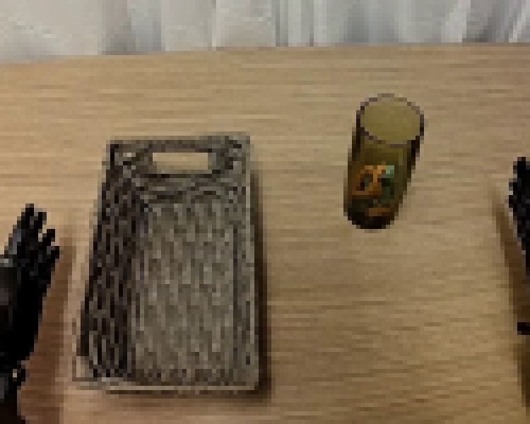
视觉工具实际返回图片 3
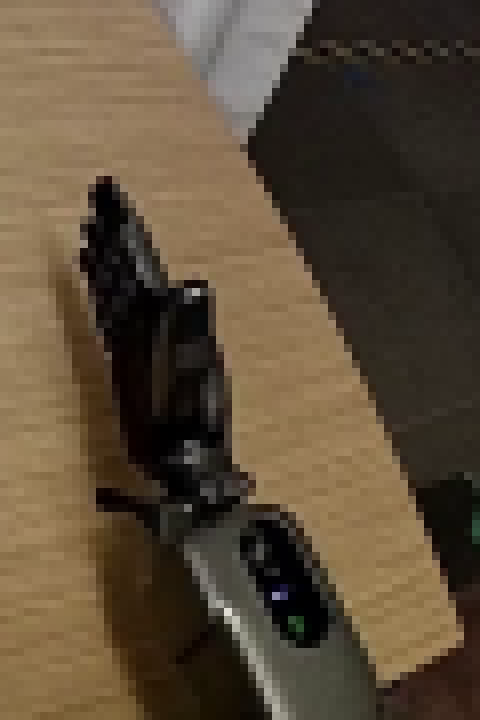
视觉工具实际返回图片 4
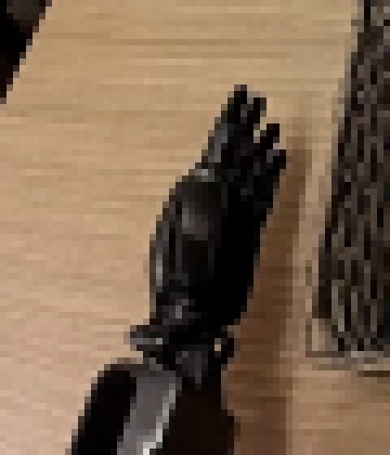
视觉工具实际返回图片 5
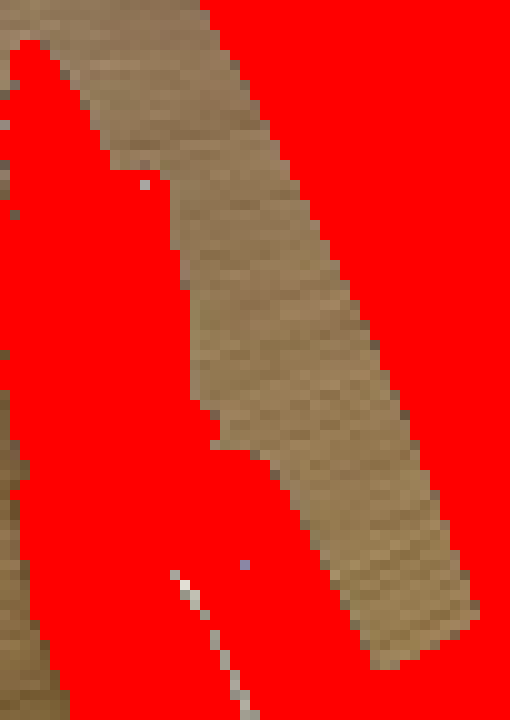
视觉工具实际返回图片 6
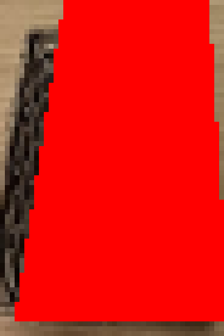
视觉工具实际返回图片 7
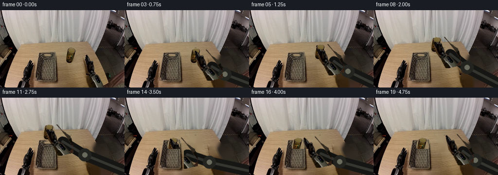
视觉工具实际返回图片 8
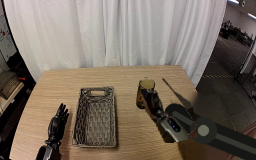
视觉工具实际返回图片 9
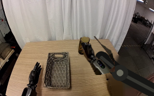
视觉工具实际返回图片 10
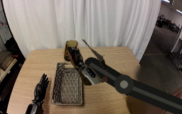
视觉工具实际返回图片 11
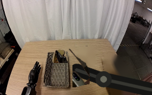
视觉工具实际返回图片 12
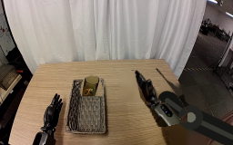
视觉工具实际返回图片 13
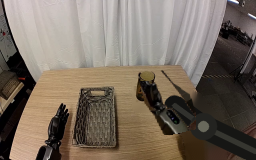
视觉工具实际返回图片 14
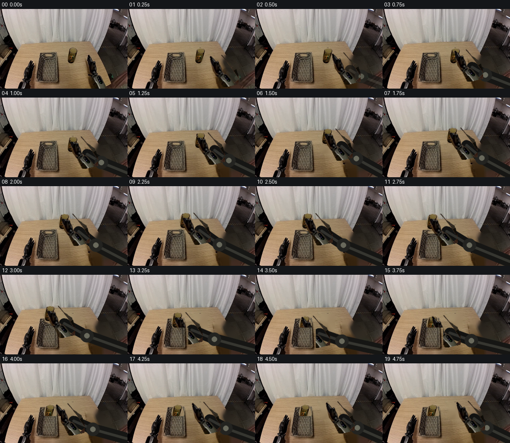
视觉工具实际返回图片 15
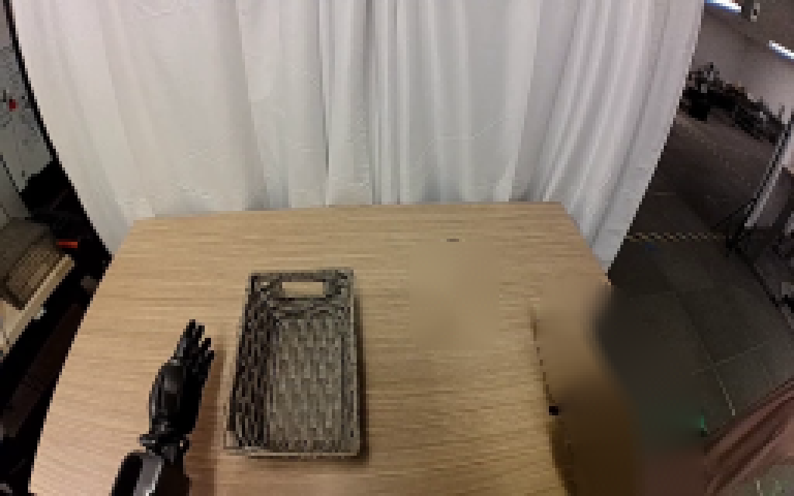
视觉工具实际返回图片 16
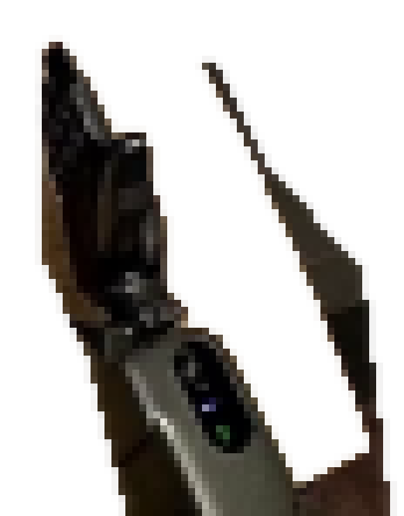
视觉工具实际返回图片 17
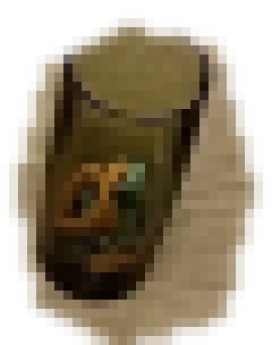
视觉工具实际返回图片 18
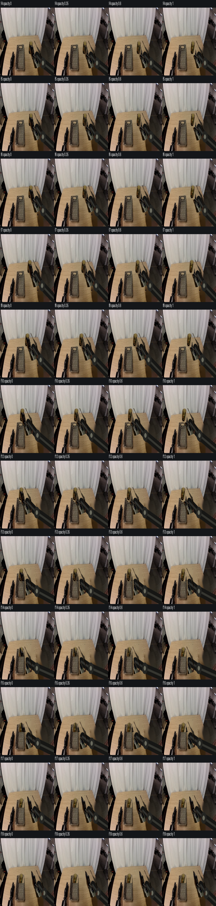
视觉工具实际返回图片 19
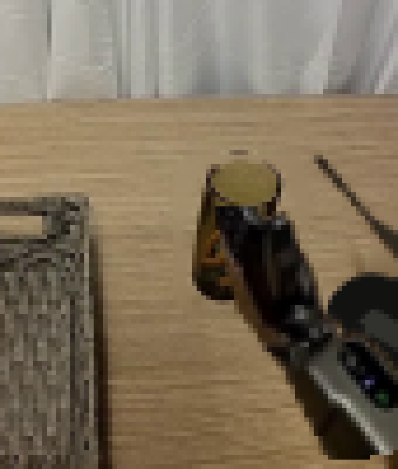
视觉工具实际返回图片 20
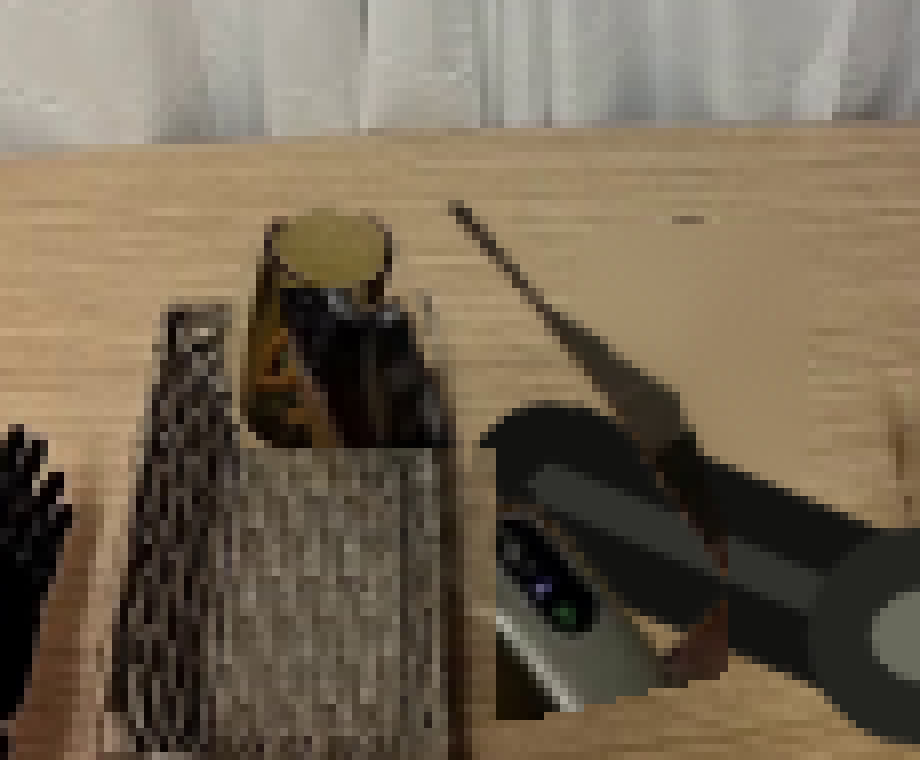
视觉工具实际返回图片 21

视觉工具实际返回图片 22
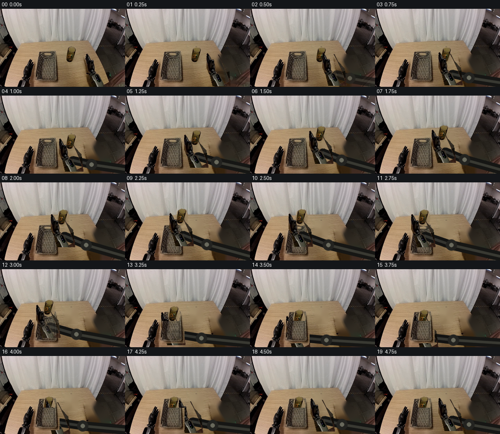
视觉工具实际返回图片 23
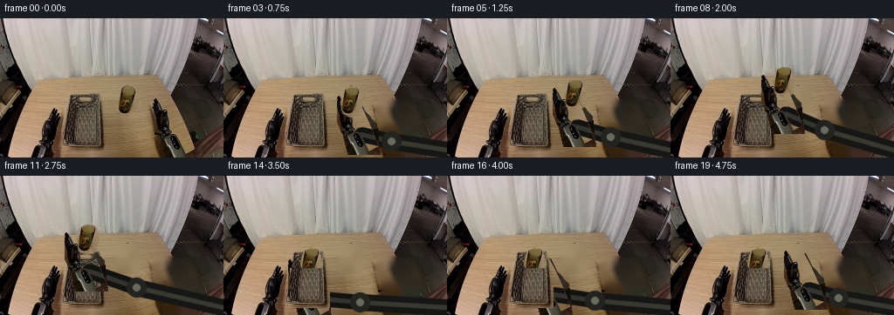
视觉工具实际返回图片 24
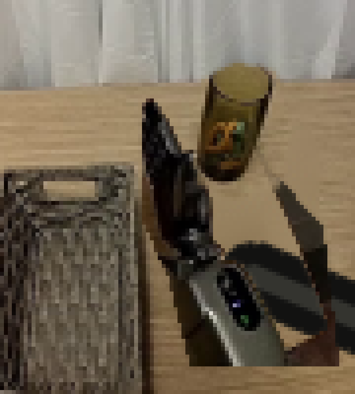
视觉工具实际返回图片 25
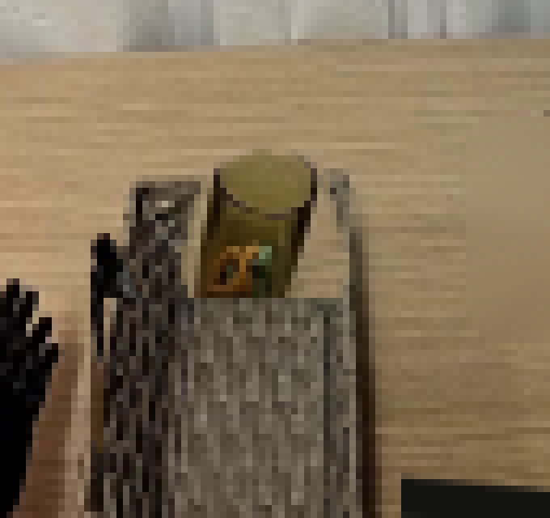
保存候选 4 份；完成命令 26 次；可验证图片返回 25 张。原始 API 响应与完整日志保留在本地。